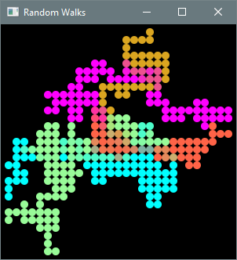
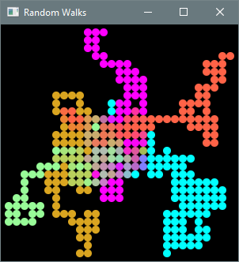
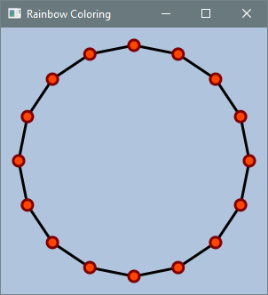
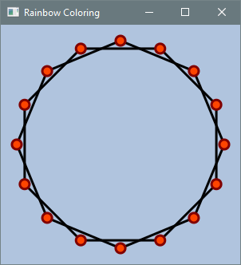
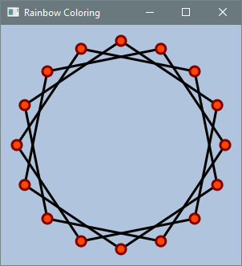
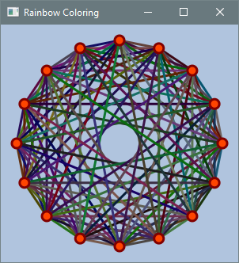
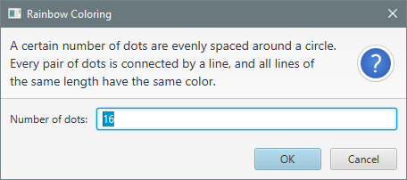

7.5 Practice Problems
7.5.1 Linear Arrays
a. Dice Sums Deluxe. Prompts the user for a number of dice and the number of sides per die, and estimates by Monte Carlo simulation the probability of each possible sum. The results are displayed as a horizontal bar chart.
Output 7.5.1a
Number of dice: 3
Number of sides per die: 5
SUM PROBABILITY
3 0.8% ★
4 2.4% ★★
5 4.8% ★★★★★
6 8.0% ★★★★★★★★
7 12.0% ★★★★★★★★★★★★
8 14.4% ★★★★★★★★★★★★★★
9 15.2% ★★★★★★★★★★★★★★★
10 14.4% ★★★★★★★★★★★★★★
11 12.0% ★★★★★★★★★★★★
12 8.0% ★★★★★★★★
13 4.8% ★★★★★
14 2.4% ★★
15 0.8% ★
To solve this problem, adapt Listing 7.1.1b so that it works for any number of dice and any number of sides.
b. Random Anagram. Prompts the user for a line of text and outputs a random anagram (the same characters in random order).
Output 7.5.1b-1
A line of text: ULTRAVIOLET
Random anagram: ITTERULLAVO
Output 7.5.1b-2
A line of text: That's no moon!
Random anagram: shot! aT noom'n
Use the Scanner method nextLine to read the input, and pass the resulting string to a helper
method that returns a random anagram. The helper method should first convert the string to an array
of characters. Although the conversion could easily be coded from scratch, the String class
provides the toCharArray method.
The next step is to shuffle the array. The most efficient algorithm for this is known as the
Fisher–Yates shuffle (or
the Knuth shuffle). Traverse the array from beginning to end, swapping each character with a
randomly chosen character at the same or a subsequent position. After shuffling the array, convert
it back to a string and return it. Converting the array back to a string requires only a single line
of code using the String constructor that takes a char[] argument.
c. Distinct Random Numbers. Prompts the user for two positive integers k and n, and outputs a sorted list of k distinct random non-negative integers less than n.
Output 7.5.1c-1
Enter number of integers to generate and upper bound: 5 99
17 23 39 56 81
Output 7.5.1c-2
Enter number of integers to generate and upper bound: 6 10
2 3 5 6 8 9
A convenient approach is to initialize an array with the integers from 0 to n − 1, shuffle it, and then output the first k elements. To shuffle the array, use the technique described in the previous problem.
d. Line of Coins. One hundred coins are arranged in a line, all tails-up. The coins are indexed from 1 to 100. Plato is bored, so he turns over every coin. That was fun, so he then turns over every second coin (2, 4, 6, ...). Next, he turns over every third coin (3, 6, 9, ...). He continues in this way, turning over every fourth coin, every fifth coin, and so on, up to every hundredth coin.
Write a program that simulates this procedure and displays the indices of the coins that are heads-up at the end. There should be exactly ten heads-up coins. Their indices follow an interesting pattern. Can you explain why this pattern arises?
e. Median Score. Prompts the user for the number of exams and their scores, and outputs the median score.
Output 7.5.1e
Enter number of exams: 5
Enter exam scores: 92 63 75 89 95
The median score is 89.
Hint: store the values in an array and use Arrays.sort.
f. Median Score without Count. Modify a solution to the previous problem so that the user can enter the scores without first having to specify how many there are.
Output 7.5.1f
Enter exam scores: 92 63 75 89 95
The median score is 89.
Hint: read a line of text as a string and call split on it to obtain an array of strings. Each
string can be converted to an int using a static method of the Integer class.
g. Dinner Party. You're throwing a dinner party and the main course will consist of peas. The dinner plates are arranged around a circular table. You quickly distribute the peas among the plates, but when the guests are seated, it is discovered that some plates have more peas than others. The following protocol will be used to ensure that each guest has the same number of peas.
- Any guest with an odd number of peas is given one additional pea.
- All guests simultaneously transfer half of their peas to the guest on their right.
- If all plates now have the same number of peas, dinner begins; otherwise, return to step 1.
Figure 7.5.1g illustrates one round of the protocol. The vertical arrows between the first two configurations show the additional peas given in step 1 of the protocol. The horizontal arrows in the third configuration show the transfers made in step 2; for example, the third guest has 10 peas, transfers 5 to the right, and simultaneously receives 4 from the left, leaving 9 peas at the start of the next round. Remember, the guests are seated in a circle, so the transfers wrap around from the last number in the output to the first. The fourth configuration shows the pea counts at the start of the next round.
Figure 7.5.1g: One Round of the Protocol
{kind=link}
Write a program that prompts the user for the number of guests and the initial pea counts, and outputs the pea counts after each round.
Output 7.5.1g
Enter number of guests: 6
Enter pea counts: 6 8 9 4 7 8
1. 6 8 9 4 7 8
2. 7 7 9 7 6 8
3. 8 8 9 9 7 7
4. 8 8 9 10 9 8
5. 8 8 9 10 10 9
6. 9 8 9 10 10 10
7. 10 9 9 10 10 10
8. 10 10 10 10 10 10
h. Dinner Party Without Count. Modify a solution to the previous problem so that the user can enter the pea counts without first specifying the number of guests.
Output 7.5.1h
Enter pea counts: 6 8 9 4 7 8
1. 6 8 9 4 7 8
2. 7 7 9 7 6 8
3. 8 8 9 9 7 7
4. 8 8 9 10 9 8
5. 8 8 9 10 10 9
6. 9 8 9 10 10 10
7. 10 9 9 10 10 10
8. 10 10 10 10 10 10
See the hint for Median Score without Count above.
i. Dinner Party Max-Min. In this version of the Dinner Party problem, a different protocol is used to redistribute the peas. In each round, a guest with the maximum number of peas gives one to a guest with the minimum number.
Output 7.5.1i-1
Enter pea counts: 6 8 9 4 7 8
1. 6 8 9 4 7 8
2. 6 8 8 5 7 8
3. 6 7 8 6 7 8
4. 7 7 7 6 7 8
5. 7 7 7 7 7 7
In general, it might not be possible for everyone to end up with exactly the same number of peas, so the goal is to reach a state in which the maximum and minimum differ by at most 1, as shown in the following sample output.
Output 7.5.1i-2
Enter pea counts: 2 3 5 8 9
1. 2 3 5 8 9
2. 3 3 5 8 8
3. 4 3 5 7 8
4. 4 4 5 7 7
5. 5 4 5 6 7
6. 5 5 5 6 6
j. Bell Curve. This problem requires knowledge of elementary statistics. The ThreadLocalRandom
class has been used throughout this book to generate uniformly distributed random numbers. When
simulating the roll of a die, for example, each outcome should be equally likely because this
models the behavior of physical dice. However, in the natural and social sciences, the normal
(or Gaussian) distribution is often a better model for observed data. Height and IQ, for example,
are not uniformly distributed in real populations. The average IQ in the United States is around
100, and most people have an IQ between 85 and 115; fewer than 1% of people are classified as
geniuses, with an IQ of 145 or higher.
The ThreadLocalRandom class also provides the nextGaussian method, which generates normally
distributed floating-point numbers. The purpose of this exercise is to investigate its behavior
experimentally. Use nextGaussian to fill an array with one million values having a mean of 100 and
a standard deviation of 15 (representing IQ scores). Since nextGaussian returns normally
distributed values with a mean of 0 and a standard deviation of 1, the values must be shifted and
scaled appropriately.
After filling the array, traverse it to compute the sample mean, sample standard deviation, and the percentages of values within one, two, and three standard deviations of the mean. The results should approximate the well-known 68–95–99.7 rule for the normal distribution.
Output 7.5.1j-1
Mean: 100.014
Standard deviation: 15.009
Within 1 standard deviation: 66.608%
Within 2 standard deviations: 95.061%
Within 3 standard deviations: 99.698%
Output 7.5.1j-2
Mean: 99.987
Standard deviation: 14.986
Within 1 standard deviation: 66.605%
Within 2 standard deviations: 95.109%
Within 3 standard deviations: 99.704%
k. Numeronyms. A numeronym (nu-MER-o-nym) is an abbreviation formed by replacing part of a word with a number. The first and last letters are retained, and the second letter is also retained if it is not a vowel (a, e, i, o, u). The remaining letters are replaced by the number of deleted letters. For example:
-
ROBOT becomes R3T. The first and last letters are retained, and the three letters between them are replaced by the number 3.
-
DROID becomes DR2D. The first and last letters are retained, and the second letter (R) is also retained because it is not a vowel. The two letters between DR and the final D are replaced by the number 2.
The replacement is made only if the resulting abbreviation is shorter than the original word. Thus, STAR remains STAR rather than becoming ST1R.
Write a program that prompts the user for a line of text and outputs the numeronymic abbreviation of each word.
Output 7.5.1k-1
Enter text: thoughts meander like a restless wind inside a letter box
th5s m5r l2e a r6s w2d in3e a l4r box
Split the input text into an array of words (using the String method split) and pass each
word to a helper method that returns its numeronymic abbreviation.
For an extra challenge, modify the program so that non-alphabetic characters are preserved in the output and treated as separators between words. For example, twenty-seven should become tw4y-s3n.
Output 7.5.1k-2
Enter text: It's a cutting-edge, next-generation, AI-powered system.
It's a c5g-edge, n2t-g8n, AI-p5d sy3m.
l. Around the Sun Simplified. Rewrite a solution to Practice Problem 6.5.2f (Around the Sun) using arrays to store circles, colors, and other values needed for the eight planets. Use loops to eliminate repeated code and significantly simplify the original solution.
m. Faro Shuffle. A Faro shuffle is a technique for shuffling an even number of cards. The top half of the deck is placed in one hand and the bottom half in the other. The cards from the two halves are then perfectly interleaved. If the interleaving starts with the bottom half, it is called an in-shuffle.
Figure 7.5.1m: Faro In-Shuffle
{kind=link}
Repeated in-shuffles eventually return any deck to its original order. Write a program that determines how many in-shuffles are needed to return a deck to its original order for any even number of cards entered by the user.
Output 7.5.1m-1
Number of cards: 8
The deck will return to its original order after 6 in-shuffles.
Output 7.5.1m-2
Number of cards: 51
It must be an even number. Try again: 52
The deck will return to its original order after 52 in-shuffles.
Faro shuffles are used in card tricks and have applications in the theory of parallel processing.
7.5.2 Monte Carlo Simulations
a. Fatal Fives. Simulates the game of Fatal Fives and displays a horizontal bar chart of the estimated probabilities for each possible payout. The user rolls three dice, and the payout is defined to be the sum of the numbers on the dice. However, fives do not count, and neither do any rolls that follow a five. For example, the payout for 3-4-2 is $9 and the payout for 3-5-6 is $3.
Output 7.5.2a
0 *****************
1 ***
2 ***
3 ****
4 ******
5 *****
6 *********
7 *******
8 ********
9 ********
10 ********
11 *******
12 *****
13 ****
14 ***
15 *
16 *
17 .
18 .
The first line corresponds to a payout of $0. The estimated probability of this outcome is 16.6%,
which rounds (Math.round) to 17 asterisks. A dot indicates that the estimated probability
rounds to zero asterisks.
b. Fatal Fives Vertical. Modify a solution to the previous problem so that the bar chart is displayed vertically, with the payout values along the bottom and the asterisks stacked in columns above them.
Output 7.5.2b
*
*
*
*
*
*
*
*
* *
* * * * *
* * * * * * *
* * * * * * * *
* * * * * * * * * *
* * * * * * * * * * * *
* * * * * * * * * * * * * * *
* * * * * * * * * * * * * * *
* * * * * * * * * * * * * * * * *
0 1 2 3 4 5 6 7 8 9 10 11 12 13 14 15 16 17 18
c. The Long Run. Prompts the user for the number of coins to flip and estimates the expected length of the longest run. A run is a maximal sequence of consecutive heads or consecutive tails.
Output 7.5.2c-1
How many coin flips: 50
Expected length of longest run: 5.98
Output 7.5.2c-2
How many coin flips: 500
Expected length of longest run: 9.30
In each simulation, fill a boolean array with random values and traverse it to determine the length
of the longest run. For an extra challenge, solve the problem without using an array.
d. Everybody Has One. Prompts the user for a number of bins and estimates the expected number of balls that must be thrown at random into the bins before every bin contains at least one ball.
Output 7.5.2d-1
How many bins: 10
Throwing balls until every bin contains one.
Expected number of balls: 29.28
Output 7.5.2d-2
How many bins: 25
Throwing balls until every bin contains one...
Expected number of balls: 95.35
This simulation models the famous Coupon Collector's Problem.
e. Maximum Load. Estimates the expected maximum number of balls in any bin when a user-specified number of balls are thrown at random into a user-specified number of bins.
Output 7.5.2e-1
Enter number of balls and number of bins: 25 10
Simulating 10,000,000 trials of throwing 25 balls into 10 bins...
Expected maximum load: 5.17
Output 7.5.2e-2
Enter number of balls and number of bins: 50 10
Simulating 10,000,000 trials of throwing 50 balls into 10 bins...
Expected maximum load: 8.69
f. Target Load. Estimates the expected number of balls that must be thrown at random into a user-specified number of bins before one bin contains a user-specified number of balls.
Output 7.5.2f-1
Enter number of bins and target load: 10 5
Simulating 10,000,000 trials of throwing balls into 10 bins before one bin contains 5 balls...
Expected number of balls: 21.86
Output 7.5.2f-2
Enter number of bins and target load: 40 10
Simulating 10,000,000 trials of throwing balls into 40 bins before one bin contains 10 balls...
Expected number of balls: 179.27
g. Yahtzee. In the game of Yahtzee, a player rolls five dice and may choose some of them to roll a second or third time. The goal is to obtain various scoring combinations. Write a Monte Carlo simulation to estimate the probability of each of the following outcomes on a single roll.
- Yahtzee: all five dice show the same number.
- Large Straight: five consecutive numbers (12345 or 23456).
- Small Straight: four consecutive numbers among the five dice (1234, 2345, or 3456).
- Full House: three dice show one number and the other two dice show a different number (for example, 22555 or 44466).
- Four of a Kind: four dice show the same number.
- Three of a Kind: three dice show the same number.
Partial Output 7.5.2g
Yahtzee: 0.08%
Large Straight: 3.09%
Small Straight: 15.45%
Full House:
Four of a Kind:
Three of a Kind:
Each trial consists of filling an array with five random dice values and checking which outcomes
occur. Implement a separate helper method for each outcome. The logic is much simpler if the array
is sorted first (use Arrays.sort).
h. Waiting for Massage Extended. Modify Listing 6.3.5 (Waiting for Massage) so that a user-specified number of massage therapists can work simultaneously. Customers wait in a single line for the next available therapist. Output the expected average waiting time.
Output 7.5.2h
Number of massage therapists: 3
Time for each massage (in minutes): 10
Average time between arrivals (in minutes): 5
Period of operation (in minutes): 120
Simulating 1,000,000 operational periods...
Expected average waiting time: 1:17
Use an array to keep track of the time remaining for each massage currently in progress.
7.5.3 Array Lists
a. Random Anagram Redux. Rewrite a solution to Practice Problem 7.5.1b (Random Anagram) using
an array list instead of an array. Use the static Collections.shuffle method to shuffle the
contents.
b. Distinct Random Numbers Redux. Rewrite a solution to Practice Problem 7.5.1c (Distinct Random
Numbers) using an array list instead of an array. Fill the list with the non-negative integers less
than n, shuffle it using Collections.shuffle, repeatedly remove the last element until only k
elements remain, and then sort the result using Collections.sort.
c. Towers of Hanoi. Three tall pegs stand in the courtyard of a monastery. Sixty-four disks are stacked on the first peg in size order from the largest on the bottom to the smallest on the top. The monks want to move the entire stack (or tower) from the first peg to the second, using the third for temporary storage as needed, but the disks can only be moved one at a time. Specifically, a disk can be transferred from the top of one stack to the top of another, or to an empty peg, but size order must be maintained: a disk can never be placed on top of a smaller one.
It was foretold that once the monks accomplish their task, the world will end. The prophecy is a safe one: even if the monks could move one disk every second, the sun would burn out long before they could complete the task. In general, the minimum number of moves required for a tower of n disks is 2n − 1. For n = 64, that amounts to over 500 billion years at a rate of one move per second. With only 3 disks, however, the puzzle can be solved in just seven moves.
Write a program that presents the Towers of Hanoi as a puzzle to be solved with a number of disks specified by the user. Let consecutive integers represent the disks in order of size, and use three array lists to represent the towers.
Output 7.5.3c
How many disks? 3
Tower A: 3 2 1
Tower B:
Tower C:
Enter move (from to): A B
Tower A: 3 2
Tower B: 1
Tower C:
Enter move (from to): A C
Tower A: 3
Tower B: 1
Tower C: 2
Enter move (from to): B C
Tower A: 3
Tower B:
Tower C: 2 1
Enter move (from to): A B
Tower A:
Tower B: 3
Tower C: 2 1
Enter move (from to): C A
Tower A: 1
Tower B: 3
Tower C: 2
Enter move (from to): C B
Tower A: 1
Tower B: 3 2
Tower C:
Enter move (from to): A B
Tower A:
Tower B: 3 2 1
Tower C:
You solved the puzzle in 7 moves.
The program should reject invalid moves by displaying an appropriate error message and prompting the user to try again.
d. FIFO Pager. A program's code and data are organized into blocks called pages. When a program executes in a virtual memory environment, some of its pages reside in main memory while the rest are stored on disk. If the program attempts to access a page that is not currently in memory, a page fault occurs. The operating system then loads the requested page into memory. However, because the number of pages a program may keep in memory is limited, loading a new page may require another page to be removed first.
How should the memory manager decide which page to remove? Ideally, the policy should minimize the number of page faults. This problem explores a simple (but not very good) replacement policy. Two better approaches are explored in the following problems.
The first in, first out (FIFO) replacement policy selects among those pages currently in memory the one that entered memory first. To see how this works, suppose the page limit is three and consider the following sequence of requests: (5, 3, 6, 0, 5, 6, 4, 3, 6, 3). Initially, none of the program’s pages are in memory, so each of the first three requests (5, 3, 6) generates a page fault. The next request, 0, also causes a page fault, and to make room for it, page 5 will be swapped out since it was loaded into memory before 3 and 6 were.
Write a program that prompts the user for the page limit and a sequence of page requests. After each request is satisfied, output the pages currently in memory in FIFO order, appending an asterisk to indicate a page fault. Use an array list to keep track of the pages in memory.
Output 7.5.3d-1
Page limit: 3
Page requests: 5 3 6 0 5 6 4 3 6
FIFO Page Replacement Simulation
5: 5 *
3: 5 3 *
6: 5 3 6 *
0: 3 6 0 *
5: 6 0 5 *
6: 6 0 5
4: 0 5 4 *
3: 5 4 3 *
6: 4 3 6 *
Output 7.5.3d-2
Page limit: 4
Page requests: 5 3 6 0 5 6 4 3 6
FIFO Page Replacement Simulation
5: 5 *
3: 5 3 *
6: 5 3 6 *
0: 5 3 6 0 *
5: 5 3 6 0
6: 5 3 6 0
4: 3 6 0 4 *
3: 3 6 0 4
6: 3 6 0 4
Many online page replacement simulators are available and can be used to test the program with additional page request sequences and page limits.
e. LRU Pager. Extend a solution to the previous problem to also implement least recently used (LRU) replacement. By this policy, the page to be swapped out is the one that was requested least recently. This generally produces fewer page faults than FIFO.
Output 7.5.3e
Page limit: 3
Page requests: 5 3 6 0 5 6 4 3 6
FIFO Page Replacement Simulation
5: 5 *
3: 5 3 *
6: 5 3 6 *
0: 3 6 0 *
5: 6 0 5 *
6: 6 0 5
4: 0 5 4 *
3: 5 4 3 *
6: 4 3 6 *
LRU Page Replacement Simulation
5: 5 *
3: 5 3 *
6: 5 3 6 *
0: 3 6 0 *
5: 6 0 5 *
6: 0 5 6
4: 5 6 4 *
3: 6 4 3 *
6: 4 3 6
Compare the seven page faults produced by LRU with the eight produced by FIFO using the same page request sequence and page limit.
f. OPT Pager. Extend a solution to the previous problem to also implement optimal (OPT) replacement. By this policy, the page to be swapped out is the one whose next use lies furthest in the future. This policy minimizes the number of page faults, but it cannot be used in practice because there is no way to predict future page requests.
Output 7.5.3f
Page limit: 3
Page requests: 5 3 6 0 5 6 4 3 6
FIFO Page Replacement Simulation
5: 5 *
3: 5 3 *
6: 5 3 6 *
0: 3 6 0 *
5: 6 0 5 *
6: 6 0 5
4: 0 5 4 *
3: 5 4 3 *
6: 4 3 6 *
LRU Page Replacement Simulation
5: 5 *
3: 5 3 *
6: 5 3 6 *
0: 3 6 0 *
5: 6 0 5 *
6: 0 5 6
4: 5 6 4 *
3: 6 4 3 *
6: 4 3 6
OPT Page Replacement Simulation
5: 5 *
3: 5 3 *
6: 5 3 6 *
0: 5 6 0 *
5: 5 6 0
6: 5 6 0
4: 6 0 4 *
3: 6 4 3 *
6: 6 4 3
7.5.4 Two-Dimensional Arrays
a. Text Square. Prompts the user for a line of text and writes it clockwise around the perimeter of a square. The side length is the smallest possible that accommodates all the characters in the text.
Output 7.5.4a-1
Enter text: This R2 unit has a bad motivator!
This R2 un
i
t
! h
r a
o s
t
a a
vitom dab
Output 7.5.4a-2
Enter text: What a piece of junk.
What a
p
i
e
. c
k e
nuj fo
Use a 2D array to represent the square. Simulate a point moving clockwise around its perimeter, placing the next input character at each position.
b. Latin Square Failure. A Latin square of order n is an n × n grid in which each row and each column contains the first n letters of the alphabet. Here are examples for n = 3 and n = 4.
ABC CBAD
CAB BADC
BCA ADCB
DCAB
One possible construction method begins with a specified letter in the upper-left corner and fills the grid row by row, left to right within each row. At each position, the least letter that has not already appeared in the current row or column is chosen. For example, this method constructs the following Latin square of order 4 starting with the letter B:
BACD
ABDC
CDAB
DCBA
Unfortunately, the method does not always succeed. Starting with the letter C, the construction reaches a point at which no letter can be placed in the final position of the second row:
CABD
ABC
Write a program that prompts the user for the order and starting letter, and outputs the construction up to the point of failure. If the construction succeeds, output the completed Latin square.
Output 7.5.4b-1
Enter order and starting letter: 6 A
A B C D E F
B A D C F E
C D A B
Output 7.5.4b-2
Enter order and starting letter: 4 B
B A C D
A B D C
C D A B
D C B A
c. Random Walks. Draws multiple random walks (Section 6.3.2) from the center of a square to its perimeter. Each walk is displayed in a different color.
Output 7.5.4c-1

Output 7.5.4c-2

Use a 2D array to store the color at each position. Blend the colors of intersecting walks using
the Color method interpolate. The number of walks is inferred from the size of the colors array
(five in the program used to generate the sample output above).
d. Lights Out. The game of Lights Out is played on a 2D grid. Each cell contains a light that is either on or off. Initially, some of the lights are on, and the goal is to turn them all off. Toggling a light also toggles the lights in the neighboring cells (two cells are neighbors if they share an edge).
Write a console application that enables the user to play the game.
Output 7.5.4d
Enter grid size: 6
0 1 2 3 4 5
0 . . # # . .
1 . . . . # #
2 . . . . # .
3 # . . . . #
4 . # . . . #
5 . # . # # .
1. Enter your move (row col): 5 0
0 1 2 3 4 5
0 . . # # . .
1 . . . . # #
2 . . . . # .
3 # . . . . #
4 # # . . . #
5 # . . # # .
2. Enter your move (row col): 4 0
0 1 2 3 4 5
0 . . # # . .
1 . . . . # #
2 . . . . # .
3 . . . . . #
4 . . . . . #
5 . . . # # .
3. Enter your move (row col): 5 4
0 1 2 3 4 5
0 . . # # . .
1 . . . . # #
2 . . . . # .
3 . . . . . #
4 . . . . # #
5 . . . . . #
4. Enter your move (row col): 4 5
0 1 2 3 4 5
0 . . # # . .
1 . . . . # #
2 . . . . # .
3 . . . . . .
4 . . . . . .
5 . . . . . .
5. Enter your move (row col): 0 3
0 1 2 3 4 5
0 . . . . # .
1 . . . # # #
2 . . . . # .
3 . . . . . .
4 . . . . . .
5 . . . . . .
6. Enter your move (row col): 1 4
0 1 2 3 4 5
0 . . . . . .
1 . . . . . .
2 . . . . . .
3 . . . . . .
4 . . . . . .
5 . . . . . .
LIGHTS OUT!
Do not initialize the grid by independently turning each light on or off at random, since the resulting position may not be solvable. Instead, begin with all lights off and perform a series of legal moves at randomly selected positions. Repeating those same moves in reverse order will return the grid to the winning position, so every generated puzzle is guaranteed to be solvable.
Implement helper methods to toggle a light and its neighbors, display the grid, and determine whether all the lights are out.
e. Rainbow Coloring. A rainbow coloring consists of dots evenly spaced around a circle, with each pair of dots connected by a line segment and all line segments assigned colors according to the separation of their endpoints. The following figures show partial rainbow colorings with 16 dots, displaying all line segments connecting pairs of dots with separations 1, 2, and 3.
Figure 7.5.4e-1: Partial rainbow coloring (separation 1)

Figure 7.5.4e-2: Partial rainbow coloring (separation 2)

Figure 7.5.4e-3: Partial rainbow coloring (separation 3)

If the center of the circle is (x, y) and its radius is r, the coordinates of the i-th dot are \((x + r\cos(i \theta),\; y + r\sin(i \theta)),\) where θ = 2π/n and n is the number of dots.
Write a JavaFX application that displays a complete rainbow coloring with 16 dots. Assign a randomly generated color to each separation between pairs of dots and use that color for the corresponding line segments.
Output 7.5.4e

As an additional feature, prompt the user to enter the number of dots in a dialog box created with
the TextInputDialog class.
Dialog Box
